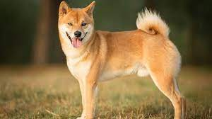
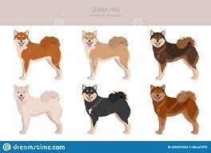
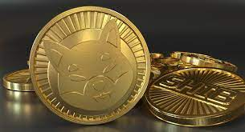

pagina 2
Cuanto hablamos de esta raza de perro nos referimos a un animal ágil con un pecho robusto y pelo corto. Algunas de las características del shiba inu son las siguientes: Tamaño pequeño: es muy similar al akita inu, uno de sus parientes más cercanos, aunque podemos observar diferencias claras en su aspecto, ya que el shiba inu es mucho más pequeño y su hocico es más fino. También observamos unas pequeñas orejas puntiagudas y ojos almendrados. Cola enroscada: este atributo lo comparte con el akita inu. Orejas triangulares: se trata de una de las características del perro shiba inu más peculiares, ya que destacan su aspecto atento. Dimorfismo sexual mínimo: los machos suelen medir unos 40 centímetros hasta la cruz y pesar unos 11-15 kilogramos de peso. Mientras, las hembras suelen medir unos 37 centímetros hasta la cruz y pesar entre 9 y 13 kilogramos.
Los colores del shiba inu son muy diversos. Podemos encontrarnos con: Rojo Rojo y fuego Blanco Crema Sésamo Sésamo rojo Sésamo negro
Shiba Inu es un token creado anónimamente en la red de Ethereum en agosto de 2020, en pleno auge de Dogecoin, y tiene a la misma raza canina como símbolo: el shiba inu asiático, un perro usado en memes de internet hacía años.